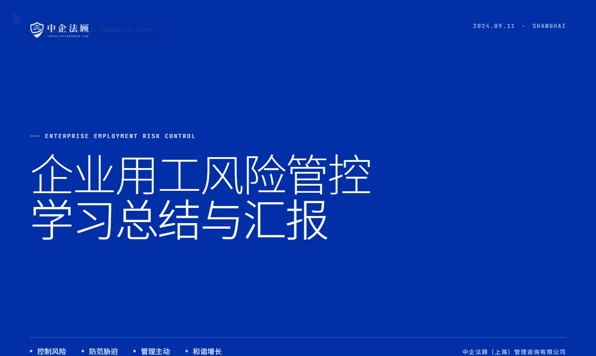

07 · 57 页
网页 PPT
把一套 3 天的线下课压成一份能发链接的汇报稿：57 页横屏网页，键盘或滚轮翻页，手机上横屏可看。版式、图表和照片墙全部用 HTML 搭出来，不依赖 PPT 插件。
主色
规格16:9 横屏 · 57 页 · 网页端
交付结构梳理 / 版式 / 图表 / 动效
思路一页一个结论，翻页即进度，不靠演讲者口才

进入演示 ↗
网页 PPT · 57 页 · 2024.09
中企法顾《企业用工风险管控》学习总结与汇报
横向翻页的网页版汇报稿，纯 HTML 搭建、无插件：键盘 ← → 或滚轮翻页，总览键看全篇，手机横屏可看。点击另开一页进入演示。
打开网页 PPT ↗